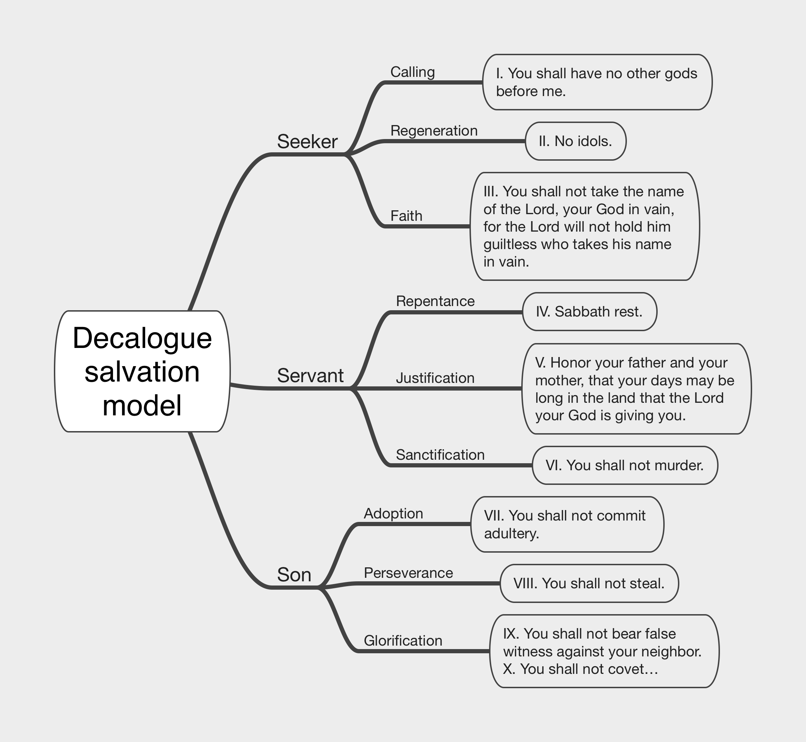

The Salvation Pattern
688 words long.
Published on 2025-03-24
For centuries, Christians have argued about how a person is saved by God. Some of the questions that have been asked are:
- What are all the steps in the process?
- In which order do those steps occur?
- Which steps are performed solely by God (called monergism)?
- Which steps rely upon human cooperation with God (called synergism)?
- Having once been saved, can a person lose their salvation?
- Can a saved person be certain that they are saved? Can they have assurance or etermal security?
This section of the website will tackle these sorts of questions. A good answer to the first two questions on the list can help with the rest. Each denomination has their own theory about the Ordo Salutis, which is Latin for the "Order of Salvation". They look to the Bible and their theological system for clues as to which steps are present, how to define them, and how to sequence them. The challenge is that no scholar from any denomination has ever found a single Bible passage that lists and sequences them all. All they have is numerous passages scattered about the Bible with partial sequences that have gaps. Also, some Bible passages give steps in one order while in another passage they are reversed. The scholars then have to put the puzzle together and reason why the sequence in one passage should be preferred over another.
That was the state of the problem – until now. I stumbled over one place – Psalm 19 – that has the full list. Then one by one I found more, twelve total. Most of the twelve present all the steps of salvation and list them in the same order. In a few, one step has been moved from its proper place in order to highlight it. In one, a step is repeated a second time at the end to give special emphasis. By this discovery, it is clear that we have a winner. The Reformed Order of Salvation comes closest to this repeated Salvation Pattern. Its first two steps (election and predestination) are usually omitted (but occasionally present), and two more are swapped (Salvation and Adoption), but otherwise they match. This close correspondence is a strong endorsement of the Calvinist view, thus lending support to their answers to the other questions.
The articles in this section will trot out these places where the steps of salvation are so carefully arranged and delve into what we can learn by studying each. Here are the places where the salvation lists were found. Each item on the list links to a diagram that shows which verses of each section correspond to which step os salvation. (Sorry, no diagrams for Ephesians yet.)
- The Decalogue (Exodus 20)
- Job's nine speeches)
- Elihu's speech (Job 33)
- God's speech (Job 38-42)
- Psalm 19)
- Proverbs 1-9
- Beatitudes (Matthew 5)
- Sermon on the Mount (Matthew 5-7)
- John 17
- Paul's letters to churches (Romans to 2 Thessalonians)
- Ephesians 4 (Two complete lists!)
One thing worth mentioning is that the nine steps of Salvation can be broken into three phases:
- A Seeker on the way to being saved
- A Believer whose condition is that of a servant, like an heir whose fortune is supervised by a custodian while waiting until they reach adulthood
- A Son who has been adopted into God's family, reached majority and enjoys full privileges concerining their inheritance

To give you a flavor of how each salvation list reveals a different facet of this gem:
- Job's speeches are a prayer for salvation
- Elihu's speech gives a promise of salvation
- God's speech to Job heralds the provision of salvation
- The Beatitudes emphasize that salvation is by Grace
- The Rest of the Sermon on the Mount shows that salvation is by faith, but faith is proven by our works
- Ephesians sets the salvation of the church as a body alongside the salvation of individual Christians
The Salvation Pattern has nine steps:
- Calling
- Regeneration (Being Born again). Also includes Illumination.
- Faith
- Repentance
- Justification (Forgiveness of sins, imputation of righteousness, peace with God)
- Sanctification
- Adoption (Becoming a child of God)
- Perseverance
- Glorification (Resurrection or Rapture wjhen Christ returns)
Under construction...

{kind=link}
{kind=link}
{kind=link}
{kind=link}
{kind=link}
{kind=link}
{kind=link}
{kind=link}
{kind=link}
{kind=link}